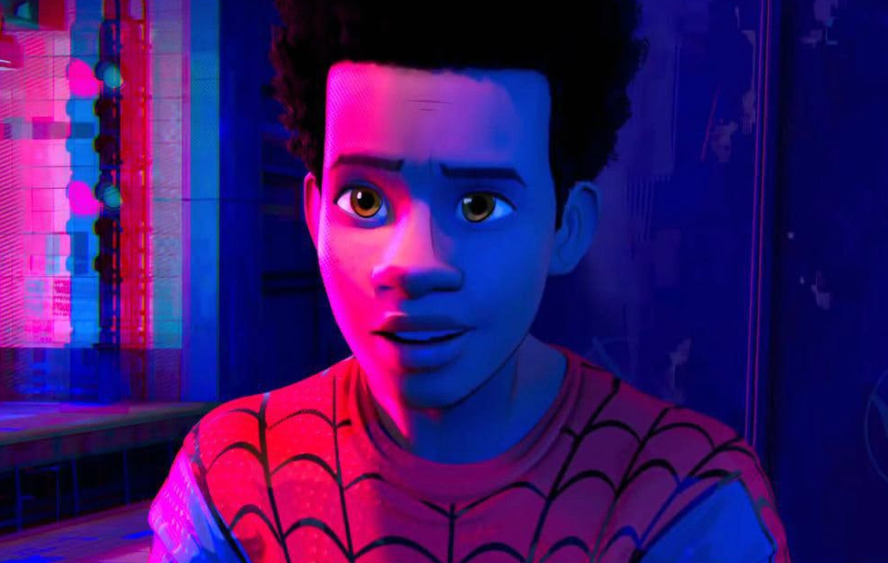
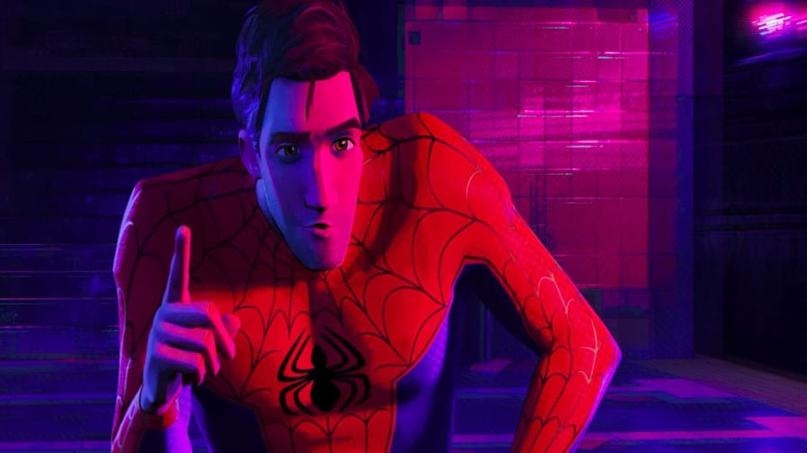
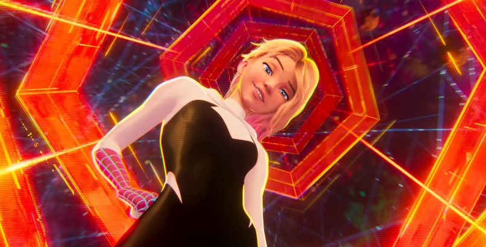

Em breve nos cinemas
Sinopse
Depois de se reunir com Gwen Stacy, Homem-Aranha é pego através do Multiverso, onde ele encontra uma equipe de Pessoas-Aranha encarregada de proteger sua própria existência.
Data de lançamento: 1 de junho de 2023 (Brasil)
Elenco
Mile Morales - Shameik Moore
Gwen Stacy - Hailee Steinfeld

Peter B. Parker - Jake Johnson

Miguel O'Hara - Oscar Issac

Jessica Drew - Issa Rae

Rio Morales - Lauren Vélez

Variantes Homem-Aranha
-
Mile Morales - (Terra: 1610)
Um adolescente inteligente mas rebelde de ascendência afro-americana e porto-riquenha, que é imbuído de habilidades parecidas com aranhas após ser mordido por uma aranha mutante e eventualmente assume o manto de um vigilante mascarado chamado "Homem-Aranha".
-
Peter B. Parker - (Terra: 616)
Mentor relutante de Miles, uma contraparte desgrenhada, cansada e de cabelos castanhos do herói de outra dimensão, que está em seus quase 40 anos.
-
Gwen Stacy - (Terra-65)
Uma contraparte deslocada em dimensão de Gwen Stacy com habilidades de aranha, que ocupa o pseudônimo de "Gwanda" na escola de Miles.